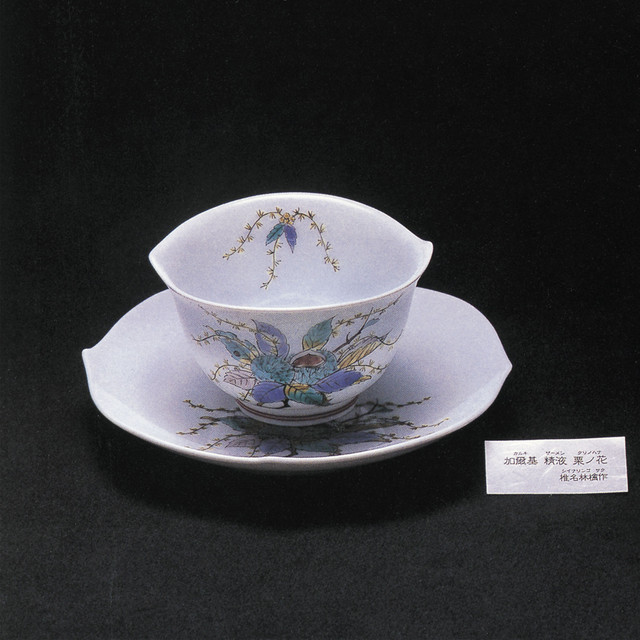
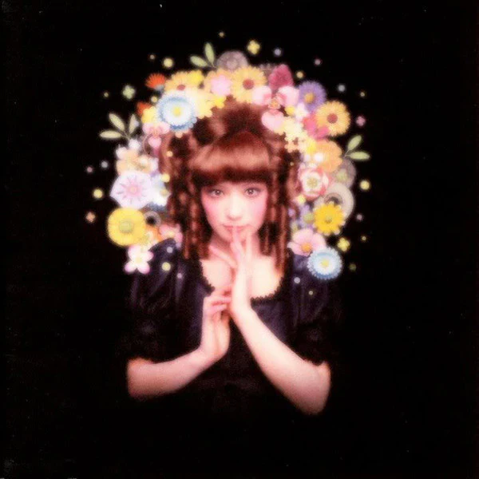
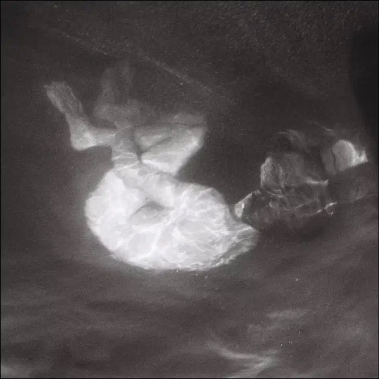
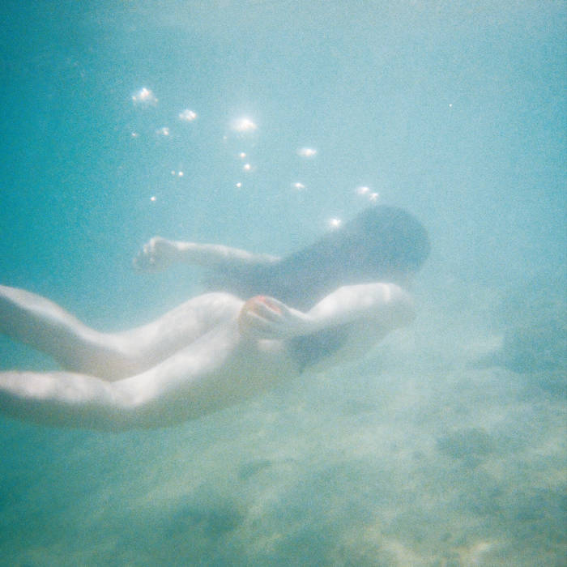
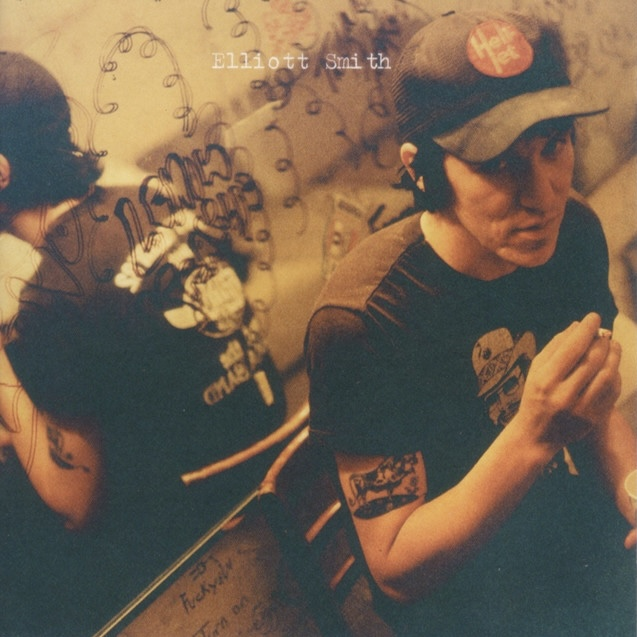
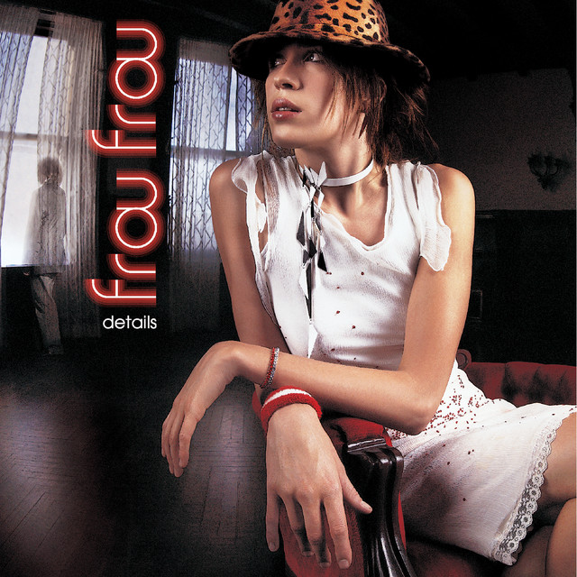
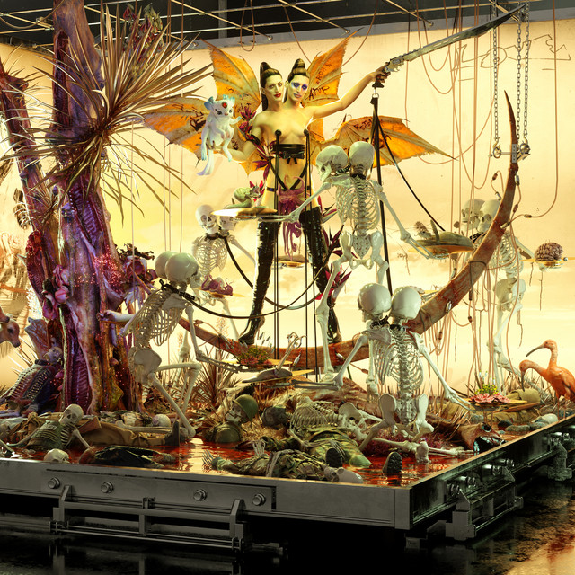
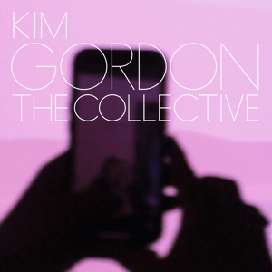

my album recs

|
vespertine, bjorkbjork: your favorite artist's favorite artist. this album is like walking through the snow and listening to the texture of the crunch of your footsteps below you. decorated with micro beats recorded from household items, bjork captures the nature of sensuality. highlights include “pagan poetry,” “hidden place,” and “undo,” with my personal favorites oscillating between “pagan poetry” and “undo.” i've been enjoying "frosti" a lot lately. i wholeheartedly recommend this album to any music lover. |

|
homogenic, bjorkan album rich with volcanic beats and dramatic, soap opera-like strings. this album captures iceland's rocky and open landscape where bjork was raised. the album’s concept centers on its name, "homogenic" – a singular flavor that permeates the record. favorites from this body of work include "bachelorette," "pluto," "hunter," "unravel," and "5 years." each track feels indispensable. the melodramatic, magnetic storytelling of “bachelorette” holds a special place in my heart, partly because i grew up mesmerized by its music video. this is an album that’s an undeniable 10 in my book. |
|  |
加爾基 精液 栗ノ花 (kalk samen chestnut flower), sheena ringosheena ringo is an artist who transcends language. i've never needed to look up her lyrics because her sonic landscape is that enticing. this album is outrageous, gritty, spunky, and delightfully absurd – a wild trip for anyone who loves experimental sounds. favorites include "宗教" (religion), "ドッペルゲンガ" (doppelganger), "茎" (stem), and "おこのみで" (as you wish). this album has been a staple in my rotation since 2021, and i recommend it to any music head who cares. |
|  |
勝訴ストリップ (winning strip), sheena ringothis is an album for any experimental rock lover. another wild ride, sheena ringo delivers a unique, unhinged, authentic soundscape to the j-rock princess herself. winning strip is the kind of album you blast when you’re in the mood for something weird, loud, and unapologetically hard-hitting. some standouts are "浴室" (bathroom), "アイデンティティ" (identity), and "本能" (instinct). another 10 for me. |

|
girl with fish, feeble litle horsethis album reigns as the queen of bubblegrunge. feeble little horse combines bubbly synths with gritty guitar melodies and eccentric lyrics to craft a singular sound. this album has been a huge inspiration to me sonically. favorites include "freak," "steamroller," "paces," and "tin man." if you like fun, offbeat records, you will fall in love with a feeble little horse. this was easily my top album of 2024. |
|  |
glow, alice phoebe loualice phoebe lou's enchanting vocals and introspective songwriting shine on glow. the way it's mixed feels textural but glimmery - especially the acoustic guitar. i've been obsessed with this album since 2021. when i listen, i think of malibu and the chilly la breeze. standouts include the haunting "driveby," the whimsical "lovesick," and the tender "lover // over the moon." another beautiful indie record i’m obsessed with. |
|  |
windswept adan, ichiko aobathe soundscape of windswept adan is dreamy and evocative of a contemporary-classical world. ichiko aoba's voice is like a flute - piercing, yet soft. this album feels like walking on an island, surrounded by crabs, seagulls, and an ocean breeze. some of my favorite tracks are "porcelain," "parfum d'etoiles," and "sagu's palm song." the orchestration on this album alone is breathtaking. another distinct favorite of mine since 2021 (i did a lot of music discovery around that time). |
|  |
either/or, elliott smithelliott smith’s brooding lyricism captures a raw honesty that resonates deeply with anyone introspective. his lyricism is distinct in its self-awareness, pity, and criticism. to be frank, his writing reminds me of my internal dialogue - and perhaps that's why many people find his music so compelling. my standouts are "ballad of big nothing," "between the bars," and "speed trials." i recommend this album to anyone who cares to understand themself. it’s an undeniable 10. |

|
songs, adrianne lenkeradrianne lenker’s songwriting is nothing short of extraordinary. it’s best enjoyed on a drive to yosemite, swerving through a winding road deep in the woods. learning her picking patterns has exponentially improved my guitar playing. i aspire to be as talented as a songwriter as adrianne lenker. my favorite track is “ingydar,” closely followed by “half return” and “not a lot, just forever.” the imagery she employs is poetic, textural, and tasteful. |
|  |
details, frou frouimogen heap’s distinctive vocal style and guy sigsworth’s production blend seamlessly on details. it’s as if trip-hop met pop and added a touch of playful eccentricity. heap’s voice mirrors the computer-centered production, with yodel-like flips that feel like flipping a switch. my favorite of this record is hands down "breathe in." guy sigsworth, a collaborator of bjork, adds a unique, electric twinge that separates this from the rest of heap's music. i love this record. |
|  |
kickiii, arcaarca’s artistry and vision are unparalleled, and kick iii perfectly embodies her experimental, gritty, and inquisitive approach to electronic music. favorites include “señorita,” and “incendio,” for their hard-edged beats and boldness. this glitchy art-pop record is bursting with contagious energy and is always on my rotation when i’m in an electronic kick. if you intend to check out this record, be sure to listen to kick i and kick ii first. |
|  |
the collective, kim gordonthis record is a record you can’t listen through without a laugh - in a good way. from eclectic lyrics to satirical singing, kim gordon–at 70 years old–encapsulates humor with a catchy, youthful trap-inspired landscape. the album is decorated with distorted, hard-edged synths and a gritty guitar that make you question how a 70-year-old woman came up with something so modern. kim gordon is a freaking genius. my girlfriend and i listen to this album to gawk at the edgy “bye bye” and giggle at “i’m a man,” my favorites from this album. i love this album. |